화공기사(구) (2016-03-06 기출문제)
1과목: 화공열역학
1. 이성분 혼합물에 대한 깁스 두헴(Gibbs-Duhem)식에 속하지 않는 것은? (단,
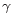
는 활성도계수(activity coefficient), μ는 화학퍼텐셜, x는 몰분율)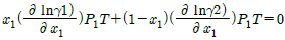
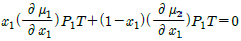
- x1dμ1+x2dμ2=0(const, T, P)
- μ1dx1+μdx2=0(const, T, P)
(정답률: 58%)
2. i 성분의 부분 몰 성질 i (partial molar property
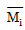
)을 옳게 나타낸 것은? (단, M ; 열역학적 용량변수의 단위 몰당의 값(예 : U, H, S, G 등을 표시함, ni ; i성분의 몰 수, nj : i 번째 성분 이외의 모든 몰수를 일정하게 유지한다는 것을 의미한다.)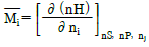
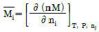
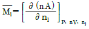
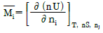
(정답률: 65%)

3. 기상 반응계에서 평형상수가
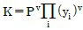
로 표시될 경우는? (단, vi는 성분 i의 양수론,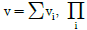
는 모든 화학종 i의 곱을 나타낸다.)- 평형 혼합물이 이상기체와 같은 거동을 할 때
- 평형 혼합물이 이상용액과 같은 거동을 할 때
- 반응에 따른 몰수 변화가 없을 때
- 반응열이 온도에 관계없이 일정할 때
(정답률: 76%)
4. 열역학의 기초 사항에 대한 설명으로 가장 적절한 것은?
- 이상기체의 엔탈피는 온도만의 함수이다.
- 1기압에서 결정 상태에 있는 물질의 엔트로피는 0℃에서 0이다.
- 가역과정에서 계가 하는 일은 상태함수이다.
- 제2종 영구기관은 불가능하지만 제1종 영구기관은 가능하다.
(정답률: 75%)
5. 평형(equilibrium)의 정의와 가장 거리가 먼 것은?
- △GTP=0
- 시간에 따른 열역학적 특성 변화가 없는 상태
- 정반응 속도와 역반응의 속도가 같다.
- ΔVmix=0
(정답률: 71%)
6. 일정한 T, P에 있는 닫힌계가 평형상태에 도달하는 조건에 해당하는 것은?
- (dGt)T, P = 0
- (dGt)T, P ＞ 0
- (dGt)T, P ＜ 0
- (dGt)T, P = 1
(정답률: 79%)
7. 액화공정에 대한 설명으로 틀린 것은?
- 일정 압력 하에서 열교환에 의해 기체는 액화될 수 있다..
- 등엔탈피 팽창을 하는 조름공정(throttling process)에 의하여 기체를 액화시킬 수 있다.
- 기체는 터빈에서 등엔트로피 압축에 의하여 액화된다.
- 린데(Linde)공정과 클라우데(Claude)공정이 대표적인 액화 공정이다.
(정답률: 53%)
8. 실제기체가 이상기체에 가장 가까울 때의 조건은?
- 저압고온
- 저압저온
- 고압저온
- 고압고온
(정답률: 73%)
9. 증기 터빈(steam turbin)에서 가장 많은 동력을 얻을 수 있는 공정은?
- 등온공정
- 등엔탈피공정
- 등엔트로피공정
- 정압공정
(정답률: 51%)
10. 공비혼합물을 이루는 어느 이성분계혼합물이 있다. 일정한 온도에서 P-x 선도가 다음의 식으로 표시된다고 할 때 이 온도에서 이 혼합물의 공비점의 조성(X1)은?
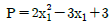
- 0.35
- 0.45
- 0.60
- 0.75
(정답률: 58%)
11. 실제 기체의 압력이 0에 접근할 때 잔류(residual) 특성에 대한 설명으로 옳은 것은? (단, 온도는 일정하다.)
- 잔류 엔탈피는 무한대에 접근하고 잔류 엔트로피는 0에 접근한다.
- 잔류 엔탈피와 잔류 엔트로피 모두 무한대에 접근한다.
- 잔류 엔탈피와 잔류 엔트로피 모두 0에 접근한다.
- 잔류 엔탈피는 0에 접근하고 잔류 엔트로피는 무한대에 접근한다.
(정답률: 72%)
12. 그림과 같은 압력-엔탈피 선도(lnP 대 H)에서 엔탈피 변화(H2-H1)는 무엇에 해당하는가?
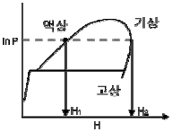
- 승화열
- 혼합열
- 증발열
- 용해열
(정답률: 80%)
13. 다음 반응에서 초기 반응물의 농도가 각각 H2S 1mol, H2O 3mol의 비율로 주어진다. 이 화학반응이 평형에 도달할 경우 반응계의 자유도 수는?(오류 신고가 접수된 문제입니다. 반드시 정답과 해설을 확인하시기 바랍니다.)
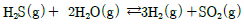
- 1
- 2
- 3
- 4
(정답률: 33%)
14. A, B 성분의 이상용액에서 혼합에 의한 함수변화 값으로 틀린 것은? (단, xA, xB는 액상의 몰분율을 나타낸다.)
- △G = RT(xAlnxA+xBlnxB)
- △V = 0
- △H = ∞
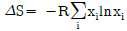
(정답률: 74%)
15. 25℃에서 정용열량계의 용기에서 벤젠을 태워 CO2와 액체인 물로 변화했을 때의 발열량이 780,090cal/mol이었다. 25℃에서의 표준연소열은? (단, 반응은
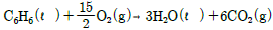
이며, 반응에 사용된 기체는 이상기체라 가정한다.)- 약 -780,980 cal
- 약 -783,090 cal
- 약 -786,011 cal
- 약 -779,498 cal
(정답률: 59%)
16. 그림과 같이 계가 일을 할 때 이 계의 효율을 옳게 나타낸 것은?
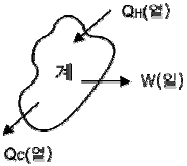
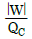
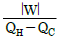
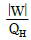
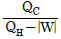
(정답률: 68%)
17. 20℃, 1atm에서 아세톤의 부피팽창계수 β는 1.487×10-3℃-1, 등온압축계수 K는 62×10-6atm-1이다. 아세톤을 정적 하에서 20℃, 1atm으로부터 30℃까지 가열하였을 때 압력은 약 몇 atm인가? (단, β와 K의 값은 항상 일정하다고 가정한다.)
- 12.1
- 24.1
- 121
- 241
(정답률: 61%)
18. 2성분 혼합물이 액체-액체 상평형을 이루고 있는 α상과 β상이 있을 때 액체-액체 상평형 계산에 사용되는 관계식에 해당하는 것은? (단, x1은 성분 1의 조성,
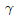
는 활동도계수,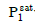
는 성분 1의 증기압, H1은 성분1의 헨리상수,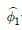
은 성분 1의 퓨개시티 계수이다.)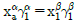
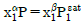
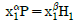
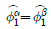
(정답률: 54%)
19. 비리얼(Virial))식으로부터 유도된 옳은 식은? (단, B = 제2비리얼계수, Z = 압축계수)
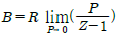
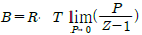
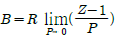
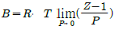
(정답률: 60%)
20. Carnot 순환으로 작동되는 어떤 가역 열기관이 500℃에서 1000cal의 열을 받아 일을 생산하고 나머지의 열을 100℃에서 배출한다. 가역 열기관이 하는 일은?
- 417cal
- 517cal
- 373cal
- 773cal
(정답률: 67%)
2과목: 단위조작 및 화학공업양론
21. 용해도에 영향을 미치는 조건에 대한 설명이 틀린 것은?
- 온도증가는 기체의 용해도를 감소시킨다.
- 온도증가는 고체, 액체의 용해도를 증가시킨다.
- 압력은 고체, 액체, 기체의 용해도에 크게 영향을 미친다.
- 분자구조에 따라서 극성은 극성을, 비극성은 비극성을 녹인다.
(정답률: 58%)
22. 벤젠과 톨루엔은 이상 용액에 가까운 용액을 만든다. 80℃에서 벤젠과 톨루엔의 증기압은 각각 743mmHg 및 280mmHg이다. 이 온도에서 벤젠의 몰분율이 0.2인 용액의 증기압은?
- 352.6 mmHg
- 362.6 mmHg
- 372.6 mmHg
- 38.26 mmHg
(정답률: 67%)
23. “고체나 액체의 열용량은 그 화합물을 구성하는 개개 원소의 열용량의 합과 같다.”는 누구의 법칙인가?
- Dulong Petit
- Kopp
- Trouton
- Hougen Watson
(정답률: 52%)
24. 그림과 같이 연결된 두 탱크가 있다. 처음 두 탱크 사이는 닫혀 있었으며, 이 때 탱크 1에는 600kPa, 70℃의 공기가 들어 있었고, 탱크 2에는 1200kPa, 100℃에서 O2 10%, N2 90%인 기체가 들어있었다. 밸브를 열어서 두 탱크의 기체가 완전히 섞이게 한 결과, N2 88% 이었다. 탱크 2의 부피는?
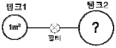
- 1.27m3
- 2.45m3
- 3.72m3
- 3.84m3
(정답률: 45%)
25. 수소 16wt%, 탄소 84wt%의 조성을 가진 연료유 100g을 다음 반응식과 같이 연소시킨다. 이때 연소에 필요한 이론 산소량은 몇 mol인가?
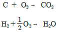
- 6
- 11
- 22
- 44
(정답률: 62%)
26. 에너지 소비율 7.1×1012W은 매년 몇 칼로리씩 소모되는 양인가?
- 2.2×1020cal/year
- 5.3×1019cal/year
- 3.2×1019cal/year
- 4.3×1020cal/year
(정답률: 61%)
27. 500mL 용액에 10g의 NaOH가 들어 있다. 이 물질의 N농도는?
- 2.0
- 1.0
- 0.5
- 0.25
(정답률: 58%)
28. 75℃, 1.5bar, 40% 상대습도를 갖는 습공기가 1000m3/h로 한 단위공정에 들어갈 때 이 습공기의 비교습도는 약 몇 %인가? (단, 75℃에서의 포화증기압은 289 mmHg이다.)
- 30%
- 33%
- 38.4%
- 40.0%
(정답률: 47%)
29. 다음과 같은 반응의 표준반응열은 몇 kcal/mol인가? (단,C2H5OH, CH3COOH, CH3COOC2H5의 표준연소열은 각각 -326700kcal/mol, -208340kcal/mol, -538750kcal/mol 이다.)(오류 신고가 접수된 문제입니다. 반드시 정답과 해설을 확인하시기 바랍니다.)
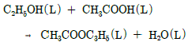
- -14240
- -3710
- 3710
- 14240
(정답률: 50%)
30. 어떤 기체의 임계압력이 2.9atm이고, 반응기내의 계기압력이 30psig 였다면 환산압력은?
- 0.727
- 1.049
- 0.99
- 1.112
(정답률: 41%)
31. 3층의 벽돌로 된 로벽이 있다. 내부로부터 각 벽돌의 두께는 각각 10, 8, 30cm이고 열전도도는 각각 0.10, 0.⑤, 1.5kcal/mㆍhㆍ℃이고 노벽의 내면 온도는 1000도이고 외면온도는 40℃일 때 단위 면적당의 열 손실은 약 얼마인가? (단, 벽돌 간의 접촉저항은 무시한다.)
- 343kcal/m2ㆍh
- 533kcal/m2ㆍh
- 694kcal/m2ㆍh
- 830kcal/m2ㆍh
(정답률: 48%)
32. 기본 단위에서 길이를 L, 질량을 M, 시간을 T로 시할 때 다음에서 차원이 틀린 것은?(오류 신고가 접수된 문제입니다. 반드시 정답과 해설을 확인하시기 바랍니다.)
- 힘 : MLT-2
- 압력 : ML-2T2
- 점도 : ML1T-1
- 일 : ML2T2
(정답률: 53%)
33. 기-액 평형의 원리를 이용하는 분리공정에 해당하는 것은?
- 증류(distillation)
- 액체추출(liquid extraction)
- 흡착(adsorption)
- 침출(leaching)
(정답률: 60%)
34. 초산과 물의 혼합액에 벤젠을 추제로 가하여 초산을 추출한다. 추출상의 wt%가 초산 3, 물 0.5, 벤젠 96.5이고 추잔상은 wt%가 초산 27, 물 70, 벤젠 3일 때 초산에 대한 벤젠의 선택도는 약 얼마인가?
- 8.95
- 15.6
- 72.5
- 241.5
(정답률: 46%)
35. 직선 원형관으로 유체가 흐를 때 유체의 레이놀즈수가 1500이고 이 관의 안지름이 50mm 일 때 전이길이가 3.75m이다. 동일한 조건에서 100mm의 안지름을 가지고 같은 레이놀즈수를 가진 유체 흐름에서의 전이 길이는 약 몇 m인가?
- 1.88
- 3.75
- 7.5
- 15
(정답률: 48%)
36. 흡수 충전탑에서 조작선(operating line)의 기울기를
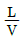
이라 할 때 틀린 것은? 의 값이 커지면 탑의 높이는 짧아진다.
의 값이 커지면 탑의 높이는 짧아진다. 의 값이 작아지면 탑의 높이는 길어진다.
의 값이 작아지면 탑의 높이는 길어진다.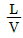
의 값은 흡수탑의 경제적인 운전과 관계가 있다. 의 최소값은 흡수탑 하부에서 기액간의 농도차가 가장 클 때의 값이다.
의 최소값은 흡수탑 하부에서 기액간의 농도차가 가장 클 때의 값이다.
(정답률: 55%)
37. 퍼텐셜 흐름(potential flow)에 대한 설명이 아닌 것은?
- 이상유체(ideal fluid)의 흐름이다.
- 고체 벽에 인접한 유체층에서의 흐름이다.
- 비회전흐름(irrotational flow)이다.
- 마찰이 생기지 않은 흐름이다.
(정답률: 55%)
38. 무차원 항이 밀도와 관계없는 것은?
- 레이놀즈(Reynolds)수
- 너셀(Nusselt)수
- 슈미트(Schnudt)수
- 그라쇼프(Grashof)수
(정답률: 52%)
39. 3중 효용관의 첫 증발관에 들어가는 수증기의 온도는 110℃이고 맨 끝 효용관에서 용액의 비점은 53℃이다. 각 효용관의 총괄 열전달계수 (W/m2ㆍ ℃ )가 2500, 2000, 1000일 때 2효용관액의 끓는점은 약 몇℃인가? (단, 비점 상승이 매우 작은 액체를 농축하는 경우이다.)
- 73
- 83
- 93
- 103
(정답률: 43%)
40. HETP에 대한 설명으로 가장 거리가 먼 것은?
- “Height Equivalent to a Theoretical plate“를 말한다.
- HEPT의 값이 1m 보다 클 때 단의 효율이 좋다.
- (충전탑의 높이 : Z) / (이론 단위수 : N)이다.
- 탑의 한 이상단과 똑같은 작용을 하는 충전탑의 높이이다.
(정답률: 59%)
3과목: 공정제어
41. S34S2+2S+6=0 로 특정방정식이 주어지는 계의 Routh 판별을 수행할 때 다음 배열의 (a), (b)에 들어갈 숫자는?
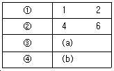
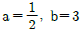
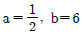
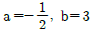
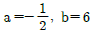
(정답률: 62%)
42. 근사적으로 다음 보우드(bode)선도와 같은 주파수 응답을 보이는 전달함수는? (단 AR은 진폭비, ω는 각 주파수이다.)
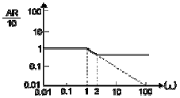
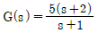
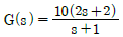
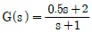
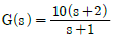
(정답률: 33%)
43. Anti Reset Windup에 관한 설명으로 가장 거리가 먼 것은?
- 제어기 출력이 공정 입력 한계에 걸렸을 때 작동한다.
- 적분 동작에 부과된다.
- 큰 서정치 변화에 공정 출력이 크게 흔들리는 것을 방지한다.
- Off set을 없애는 동작이다.
(정답률: 63%)
44. 어떤 공정의 동특성은 다음과 같은 미분방정식으로 표시된다. 이 공정을 표준형 2차계로 표현했을 때 시간상수(τ)는? (단, 입력변수와 출력변수 X, Y는 모두 편차변수(deviation variable) 이다.)
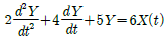
- 0.632
- 0.854
- 0.985
- 0.998
(정답률: 52%)
45. 사람이 차를 운전하는 경우 신호등을 보고 우회전하는 것을 공정 제어계와 비교해 볼 때 최종 조작변수에 해당된다고 볼 수 있는 것은?
- 사람의 두뇌
- 사람의 눈
- 사람의 손
- 사람의 가슴
(정답률: 65%)
46. 어떤 공정의 전달함수가 G(s)이다. G(O2)=5이고 G(2i)=-2 였다. 공정의 공정이득(k), 임계이득(kcu)과 임계주기(Pu)는 무엇인가?
- k = 5.0, kcu=0.5, Pu = π
- k = 0.2, kcu=0.5, Pu = 2
- k = 5.0, kcu=2.0, Pu = π
- k = 0.2, kcu=2.0, Pu = 2
(정답률: 30%)
47. 주파수 3에서 amplitude ratio가 1/2, phase angle이 -π/3인 공정을 고려할 때 공정 입력u(t)=sin(3t+2π/3)을 적용하면 시간이 많이 지난 후의 공정 출력 y(t)는?
- y(t)=sin(t-π/3)
- y(t)=2sin(t+π)
- y(t)=sin(3t)
- y(t)=0.5sin(3t+π/3)
(정답률: 51%)
48. 그림과 같은 단위 계단함수의 Laplae 변환은?
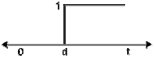
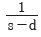
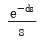
- se-us
(정답률: 68%)
49. 불안정한 계에 해당하는 것은?
(정답률: 52%)
50. 다음 공정의 단위 계단응답은?
- y(t)=1+e2t+e-2t
- y(t)=1+2e2t+e-2t
- y(t)=1+2e2+e-3t
- y(t)=1+e2t+2e-3t
(정답률: 51%)
51. 변수 값을 측정하는 감지시스템은 일반적으로 센서, 전송기로 구성된다. 다음 중 전송기에서 일어나는 문제점으로 가장 거리가 먼 것은?
- 과도한 수송지연
- 잡음
- 잘못된 보정
- 낮은 해상도
(정답률: 44%)
52. 전달함수가 G(s)=1/(s3+s2+s+0.5)인 공정을 비례 제어하 때 한계이득(폐루프의 안전성을 보장하는 비례 이득의 최대치)과 이때의 진동주기로 옳은 값은?
- 1, 2π
- 0.5, 2π
- 1, π
- 0.5, π
(정답률: 40%)
53. 전달함수가 G(s)=exp(-θs)/(τs+1)인 공정에 공정 입력 u(t)=sin(1/√2t)를 입력했을 때 시간이 많이 흐른 후 공정 출력은 y(t)=(1√2)sin(√2t-π/2)였다. θ와 τ는 무엇인가?
- τ=1/2, θ=π/2√2
- τ=1√2, θ=π/4√2
- τ=1/2, θ=π/4√2
- τ=1/2, θ=π/2√2
(정답률: 34%)
54. 다음의 블록선도는 제어기 내부 구조를 나타낸다. 이 선도가 나타내는 제어 모드는?
- 비례(P) 제어
- 비례적분(PI) 제어
- 비례미분(PD) 제어
- 비례적분미분(PID) 제어
(정답률: 57%)
55. 위상지연이 180°이 주파수는?
- 고유 주파수
- 공명(resonant) 주파수
- 구석(corner) 주파수
- 교차(crossover) 주파수
(정답률: 48%)
56. 의 laplace 역변환은?
- et-e3t
- e-t-e-3t
- e3t-et
- e3t-e-t
(정답률: 63%)
57. PID 제어기의 비례, 적분, 미분 동작이 폐루프 응답에 미치는 효과 중 틀린 것은?
- 비례동작이 클수록 폐루프 응답이 빨라진다.
- 적분동작은 오프셋을 제거하고 시스템의 안정성을 증가시킨다.
- 미분동작은 오차의 변화율만을 고려하며 오차 크기 자체에는 무관하다.
- 적분동작은 위상지연, 미분동작은 위상앞섬의 효과가 있다.
(정답률: 32%)
58. 다음 블록다이어그램에 관한 사항으로 옳은 것은?
(정답률: 39%)
59. 그림과 같이 나타나는 함수의 Laplace 변환은?
(정답률: 59%)
60. 연속 입출력 흐름과 내부 전기 가열기가 있는 저장조의 온도를 설정 값으로 유지하기 위해 들어오는 입력흐름의 유량과 내부 가열기에 공급 전력을 조작하여 출력흐름의 온도와 유량을 제어하고자 하는 시스템을 분류한다면 어떠한 것에 해당하는가?
- 다중 입력 - 다중 출력 시스템
- 다중 입력 - 단일 출력 시스템
- 단일 입력 - 단일 출력 시스템
- 단일 입력 - 다중 출력 시스템
(정답률: 50%)
4과목: 공업화학
61. 반도체 제조 공정 중 패턴이 형성된 표면에서 원하는 부분을 화학반응 혹은 물리적 과정을 통하여 제거하는 공정을 의미하는 것은?
- 세정공정
- 에칭공정
- 포토리소그래피
- 건조공정
(정답률: 67%)
62. 산과 알코올이 어떤 반응을 일으켜 에스테르가 생성되는가?
- 점화
- 환원
- 축합
- 중화
(정답률: 63%)
63. 95.6% 황산 100g을 40% 발연황산을 이용하여 100% 황산으로 만들려고 한다. 이론적으로 필요한 발연황산의 무게는?
- 42.4g
- 48.9g
- 53.6g
- 60.2g
(정답률: 33%)
64. 다음 중 Le Blanc 법과 관계가 없는 것은?
- 망초(황산나트륨)
- 흑회(black ash)
- 녹액(green liquor)
- 암모니아 함수
(정답률: 51%)
65. 질소비료 중 암모니아를 원료로 하지 않는 비료는?
- 황산암모늄
- 요소
- 질산암모늄
- 석회질소
(정답률: 59%)
66. 담체(Carrier)에 대한 설명으로 옳은 것은?
- 촉매의 일종으로 반응속도를 증가시킨다.
- 자체는 촉매작용을 못하고, 촉매의 지지체로 촉매의 활성을 도와준다.
- 부촉매로서 촉매의 활성을 억제시키는 첨가물이다.
- 불균일 촉매로서 촉매의 유효면적을 감소시켜 촉매의 활성을 잃게 한다.
(정답률: 62%)
67. 헥산(C6H14)의 구조이성질체 수는?
- 4개
- 5개
- 6개
- 7개
(정답률: 60%)
68. 전지 CulCuSO4(0.⑤M), HgSO4(S)lHg의 기전력은 25℃에서 약 0.418 V이다. 이 전지의 자유에너지 변화는?
- -9.65 kcal
- -19.3 kcal
- -96 kcal
- -193 kcal
(정답률: 42%)
69. 다음의 암모니아 산화반응식에서 공기산화를 위한 혼합가스 중 NH3가스의 부피 백분율은? (단, 공기와 NH3가스는 양론적 요구량만큼만 공급한다고 가정하다.)
- 14.4%
- 22.3%
- 33.3%
- 41.4%
(정답률: 45%)
70. RCH=CH3와 할로겐화 메탄 등의 저분자 물질을 중합하여 제조되는 짧은 사슬의 중합체는?
- 덴드리머(dendrimer)
- 아이오노머(ionomer)
- 텔로머(telomer)
- 프리커서(precursor)
(정답률: 59%)
71. 석유, 석탄 등의 화석연료 이용 효율 및 환경오염에 대한 설명으로 옳은 것은?
- CO2의 배출은 오존층파괴의 주원인이다.
- CO2와 SOX는 광화학스모그의 주원인이다.
- NOX는 산성비의 주원인이다.
- 열에너지로부터 기계에너지로의 변환효율은 100%이다.
(정답률: 66%)
72. NaOH 제조에 사용하는 격막법과 수은법을 옳게 비교한 것은?
- 전류밀도는 수은법이 크고, 제품의 품질은 격막법이 좋다.
- 전류밀도는 격막법이 크고, 제품의 품질은 수은법이 좋다.
- 전류밀도는 격막법이 크고, 제품의 품질도 격막법이 좋다.
- 전류밀도는 수은법이 크고, 제품의 품질도 수은법이 좋다.
(정답률: 58%)
73. 합성염산 제조 시 원료기체인 H2와 CL2는 어떻게 제조하여 사용하는가?
- 공기의 액화
- 공기의 아크방전법
- 소금물의 전해
- 염화물의 치환법
(정답률: 58%)
74. 스타이렌-부타디엔-스타이렌 블록공중합체를 제조하는 방법은?
- 양이온 중합
- 리빙 음이온 중합
- 라디칼 중합
- 메탈로센 중합
(정답률: 53%)
75. 열제거가 용이하고 반응 혼합물의 점도를 줄일 수 있으나 저분자량의 고분자가 얻어지는 난점이 있는 중합방법은?
- 괴상 중합
- 용액 중합
- 현탁 중합
- 유화 중합
(정답률: 51%)
76. 열가소성(thermoplastic) 고분자에 대한 설명으로 틀린것은?
- 망상구조의 고분자가 갖고 있는 특징이다.
- 비결정성 플라스틱의 경우는 일반적으로 투명하다.
- 고체상태의 고분자 물질이 많다.
- PVC 같은 고분자가 이에 속한다.
(정답률: 52%)
77. 아닐린을 삼산화크롬으로 산화시킬 때 생성물은?
- 벤젠
- 벤조퀴논
- 크실렌
- 스티렌
(정답률: 51%)
78. 암모니아소다법에서 탄산화과정의 중화탑이 하는 주된 작용은?
- 암모니아 함수의 부분 탄산화
- 알칼리성을 강산성으로 변화
- 침전탑에 도입되는 가소로 가스와 암모니아의 완만한 반응유도
- 온도 상승을 억제
(정답률: 55%)
79. 연실식 황산제조에서 Gay-Lussac 탑의 주된 기능은?
- 황산의 생성
- 질산의 환원
- 질소산화물의 회수
- 니트로실 황산의 분해
(정답률: 56%)
80. 아디프산과 헥사메틸렌디아민을 원료로 하여 제조되는 물질은?
- 나일론 6
- 나일론 66
- 나일론 11
- 나일론12
(정답률: 65%)
5과목: 반응공학
81. 크기가 같은 plug flow 반응기(PFR)와 mixed flow 반응기(MFR)를 서로 연결하여 다음의 2차 반응을 실행하고자 한다. 반응물 A의 전화율이 가장 큰 경우는?
- 앞의 세 경우 모두 전화율이 똑같다.
(정답률: 44%)
82. 어떤 1차 비가역 반응의 반감기는 20분이다. 이 반응의 속도상수를 구하면 몇 min-1인가?
- 0.0347
- 0.1346
- 0.2346
- 0.3460
(정답률: 52%)
83. 회분식 반응기에서 전화율을 75%까지 얻는데 소요된 시간이 3시간이었다고 한다. 같은 전화율로 3ft3min을 처리하는데 필요한 플러그 흐름 반응기의 부피는? (단, 반응에 다른 밀도 변화는 없다.)
- 540ft3
- 620ft3
- 720ft3
- 840ft3
(정답률: 48%)
84. 액상 반응을 위해 다음과 같이 CSTR 반응기를 연결 하였다. 이 반응의 반응 차수는?
- 1
- 1.5
- 2
- 2.5
(정답률: 52%)
85. 순환비가 1인 등온 순환 플러그 흐름 반응기에서 기초 2차 액상 반응 2A → 2R이 의 전화를 일으킨다. 순환비를 0으로 하였을 경우 전화율은?
- 0.25
- 0.5
- 0.75
- 1
(정답률: 41%)
86. H2O2를 촉매를 이용하여 회분식 반응기에서 분해시켰다. 분해반응이 시작된 t분 후에 남아있는 H2O2의 양(v)을 KMnO4표준용액으로 적정한 결과는 다음 표와 같다. 이 반응은 몇 차 반응이겠는가?
- 0차 반응
- 1차 반응
- 2차 반응
- 3차 반응
(정답률: 33%)
87. 포스핀의 기상분해 반응은 다음과 같다. 처음에 순수한 포스핀만 있다고 할 때 이 반응계의 팽창계수( )는?
(정답률: 51%)
88. Michaelis - Menten 반응(A → R, 효소반응)의 속도식은? (단, [Ea] 효소의 초기농도, [M] : Michaelis - Menten 상수, [A] : A의 농도)
- rR=k[A][E0]/([M]+[A])
- rR=k[A][M]/([E0]+[A])
- rR=k[A][E0]/([M]+E0])
- rR=k[A][E0]/([M]-[A])
(정답률: 46%)
89. 혼합흐름반응기에서 다음과 같은 1차 연속반응이 일어날 때 중간생성물 R의 최대농도(CR-max/CA0)는?
- [k2/k1)2+1]L/2
- [(k1/k2)2+1]-1/2
- [(k2/k1)1/2+1]2
- [(k1/k+2)1/2+1]-2
(정답률: 30%)
90. 다음은 CH3CHO의 기상열분해 반응에 대해 정용등은 회분식반응기에서 얻은 값이다. 이 반응의 치수에 가장 가까운 값은?
- 1차
- 1.7차
- 2.1차
- 2.8차
(정답률: 39%)
91. 난분자형 1차 비가역 반동을 시키기 위하여 관형반응기를 사용하였을 때 공간속도가 2500/h이었으며 이때 전화율은 30%였다. 만일 전화율이 90%로 되었다면 공간속도는?
- 367h1
- 377h1
- 387h1
- 397h1
(정답률: 52%)
92. 이상기체 반응 A → R + S가 순수한 A로부터 정용회 분식 반응기에서 진행될 때 분압과 전압간의 상관식으로 옳은 것은? (단, PA: A의 분압, PR: R의 분압, π0: 초기전압, π: 전압)
- PA=2π0-π
- PA=2π-π0
- PA2=2(π0-π)+PR
- PA2=2(π-π0)PR
(정답률: 40%)
93. 다음은 어떤 가역 반응의 단열 조작선의 그림이다. 조작선의 기울기는 로 나타내는데 이 기울기가 큰 경우에는 어떤 형태의 반응기가 가장 좋겠는가? (단, CP 는 열용량, ΔHr은 반응열을 나타낸다.)
- 플러그 흐름 반응기
- 혼합 흐름 반응기
- 교반형 반응기
- 순환 반응기
(정답률: 54%)
94. 물리적 흡착에 대한 설명으로 가장 거리가 먼 것은?
- 다분자 층 흡착이 가능하다.
- 활성화 에너지가 작다.
- 가역성이 낮다.
- 고체표면에서 일어난다.
(정답률: 50%)
95. 다음 중 불균일 촉매반응(heterogeneous catalytie reaction)의 속도를 구할 때 일반적으로 고려하는 단계가 아닌 것은?
- 생성물의 탈착과 확산
- 반응물의 물질전달
- 촉매표면에 반응물의 흡착
- 촉매표면의 구조변화
(정답률: 61%)
96. 다음과 같은 액상 1차 직렬반응이 관형 반응기와 혼합반응기에서 일어날 때 R 성분의 농도가 최대가 되는 관형 반응기의 공간시간 τp와 혼합 반응기의 공간시간 τm에 관한 식으로 옳은 것은? (단, 두 반응의 속도상수는 같다.)
- τm ＞ τp ＞ 1
- τp/τm ＞ 1
- τp/τm = 1
- τp/τm = k
(정답률: 46%)
97. 어떤 반응의 온도를 47℃에서 57℃로 증가시켰더니 이 반응의 속도는 두 배로 빨라졌다고 한다. 이때의 활성화 에너지는?
- 약 12,500cal
- 약 13,500cal
- 약 14,500cal
- 약 15,500cal
(정답률: 56%)
98. Space time이 5분이라면 다음 설명 중 어떤 것을 뜻 하는가?
- 원하는 전환율을 얻는데 걸리는 시간이 분이다.
- 분당반응기 체적의 5배되는 feed를 처리할 수 있다.
- 5분 만에 100% 전환을 얻을 수 있다.
- 분당 반응기 체적의 배 되는 feed를 처리할 수 있다.
(정답률: 48%)
99. 다음의 병행반응에서 A가 반응물질, R이 요구하는 물질일 때 instantaneous fractional yield(순간적 수득분율) 는?(오류 신고가 접수된 문제입니다. 반드시 정답과 해설을 확인하시기 바랍니다.)
- dCR/(dCA)
- dCR/dCA
- dCS/(-dCA)
- dCS/dCA
(정답률: 54%)
100. 기초 2차 액상반응 2A → 2R을 순환비가 2인 등온플러그 흐름반응기에서 반응시킨 결과 50%의 전화율을 얻었다. 동일반응에서 순환류를 폐쇄시킨다면 전화율은?
- 0.6
- 0.7
- 0.8
- 0.9
(정답률: 32%)
부분 몰 성질 i는 i 성분의 몰수를 일정하게 유지하면서 시스템의 다른 조건을 변화시켰을 때 i 성분의 몰에 대한 변화량을 의미한다. 따라서, ""는 i 성분의 몰수를 일정하게 유지하면서 시스템의 온도를 변화시켰을 때 i 성분의 몰에 대한 엔탈피 변화량을 의미한다.